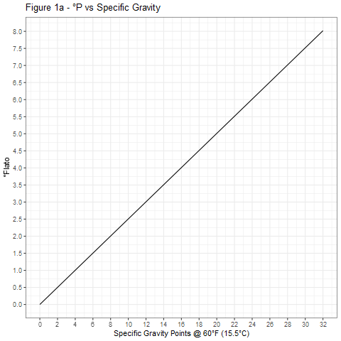
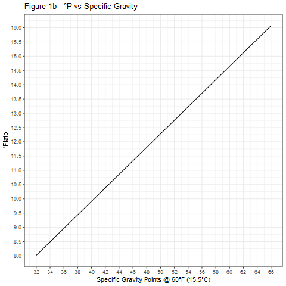

Understanding Specific Gravity and Extract
Understanding the basis of extract potential enables you to refine your method, fine-tune your bill of materials, and ensure success in achieving the beer you seek. Simple conversion charts make easy work of converting specific gravity to degree extract and back again.
Brewers use two primary systems for measuring the amount of extract or alcohol dissolved in wort or beer – specific gravity and percent extract by weight. Because published methods, recipes, and product information often provide extract data in only one of the two possible forms, knowing how to convert from one system to the other provides a powerful tool for recipe design. This article defines and explains the two main systems for measuring extract and provides the tools that will enable you to convert from one system to the other, calculate extract yield, and make adjustments to your brewing process.
Specific Gravity
Specific gravity is the density (weight per unit volume) of a substance divided by the density of water. A specific gravity (SG) of 1.050 (“50 points”) indicates that the substance is 5% heavier than an equal volume of water. The specific gravity of liquids is often measured with a hydrometer, whose weight (a constant) displaces different volumes of liquid as the liquid’s density varies. The typical hydrometer consists of a weighted bulb with a slender graduated stem rising above it. Once the bulb is submerged, the increment of displacement with depth is determined only by the cross section of the stem, which must be very small to ensure a high degree of accuracy.
Variation with temperature: The densities of water and wort vary with temperature. When using specific gravity in speaking or writing, reference temperatures for the wort sample and for water must be specified along with the value of specific gravity. A wort may have, for example, a specific gravity of 1.050 at 60°F (15.5°C) relative to water at 60°F, or 1.050 at 60°F/60°F (1.050 at 15.5°C/15.5°C). The density of water peaks at 39°F (4°C), and that temperature is sometimes used as a reference temperature for the density of water. Brewers use reference temperatures closer to room (cellar?) temperature. The wort reference temperature and water reference temperature are always the same, so the measured specific gravity of wort with no extract content is 1.000. It is therefore sufficient to say that a given wort has a specific gravity of 1.050 at 60°F, the convention used in this article. Typical reference temperatures are 60°F (15.5°C), 64°F (17.5°C), and 68°F (20°C).
Readings taken when the wort or beer is at a temperature other than the reference temperature can be adjusted back to the reference temperature, and some hydrometers have a built-in thermometer and correction read-out. Alternatively, a correction table or curve, usually supplied with the instrument, can be used to adjust readings. Such corrections must include the test sample’s change in density with temperature and also the change in the volume of the instrument itself. Strictly speaking, the necessary wort density adjustment is a function of the extract content and temperature (1), but this is a small effect. If the correction data assumes a nominal extract content, the error is at most 0.0002 (0.2 points) in specific gravity, if the sample is 10°F (5.5°C from the reference temperature. This diminishes to zero as the sample is brought to the reference temperature.
Percent Extract by Weight - Plato and Balling Scales
Tables constructed in 1843 by the German chemist Karl Balling, and later improved upon by Plato for the German Imperial Commission, correlate specific gravity with the percent by weight of extract as sucrose in solution. Of the common sugars, sucrose produces the largest increase in specific gravity for a given percentage by weight in solution. Both tables were derived by making up solutions of sucrose (cane sugar) in water – each solution containing different percentages by weight – and weighing a known volume of the resulting solutions to determine their densities. Plato’s table is slightly more accurate than Balling’s, but for practical purposes they are the same. Stating that a wort is 10 degrees Plato (or Balling) means that if the extract in solution were 100% sucrose, it would be 10% of the total weight. In the typical wort, however, only a small fraction of the extract is actually sucrose. This is not a problem; sucrose was merely selected as the reference because it produces the largest increase in specific gravity for a given percentage by weight in solution. Had another, “lighter” sugar been selected, sucrose would, confusingly, yield more than 100% of its weight as extract (see below). Throughout the following discussion, degrees P will be used to indicate the percent by weight of extract in solution.
Measuring extract using the Plato scale: A hydrometer that is calibrated in degrees Plato (degrees P) is properly called a saccharometer, because it directly measures the percent sugar as sucrose by weight in solution. Degrees Plato do not vary with temperature, because the weight of the water and of the extract contained in the water do not vary. The statement that a wort is 10 degrees P, therefore, needs no accompanying reference temperature. When measuring extract using the Plato scale, however, the wort must be at the reference temperature. Otherwise, a correction must be applied because the saccharometer is still comparing a weight to a displaced volume. Adjustments are made in the same way as for instruments that measure specific gravity.
Relationship between Specific Gravity and Degrees Plato
Although the Plato and Balling tables were derived empirically, approximate conversion formulas can be found. Roughly, for specific gravity at 60°F (15.5°C),
\[ P = (SG - 1)/0.004 \tag{1}\]
or
\[ P = SG_{points}/4 \text{ and converseley, } SG_{points} = 4 \cdot P \tag{2}\]
A much more accurate, yet still easily calculated conversion, also for specific gravity at 60 degrees F (15.5 degrees C), is given by
\[ P = 259 - \frac{259}{SG} \text{ or } SG = \frac{259}{259 - P} \tag{3}\]
This form is given by Clerck (1995) for specific gravity at 17.5°C, using 260 instead of 259 as the constant in the equation. I have found the value 259 to give good accuracy for specific gravity at 60°F (15.5°C).
When extreme accuracy is desired, a polynomial curve fit to the table values can be derived using linear regression techniques. I obtained the following third-degree fit using a table that charts specific gravity at 60°F (15.5°C) against the percentage (w/w) (measured in degrees Plato) found in Hough, Briggs, and Stevens (1971):
\[ P = -676.67 + 1286.4 \cdot SG - 800.47 \cdot S{G^2} + 190.74 \cdot S{G^3} \tag{4}\]
The curves shown in Figure 1 were generated using Equation 4 and provide a graphical means of accurate conversion between specific gravity and degrees Plato.
Figure 2 shows the relative accuracies of the three conversion equations 1, 3, and 4. For most purposes, Equation 3 is adequate and much preferred over Equation 1, especially at high specific gravities.
Applications
Weight of extract in solution: The weight of extract, WE (as sucrose), per unit volume of solution can be calculated as
\[ WE = \frac{P}{{100}} \cdot SG \cdot r \tag{5}\]
where \(r\) is the density of water at the reference temperature for specific gravity. Any of the previous equations relating specific gravity and degrees Plato can be substituted into the above to obtain an equation for the weight of extract in solution as a function of either specific gravity or degrees Plato. Assuming degrees P = 259 - 259/SG, the weight of extract per unit volume can be written as
\[ WE = 2.59 \cdot (SG - 1) \cdot r \tag{6}\]
The density of water at 60°F (15.5°C) is 8.338 lb/gal (0.9990 kg/L) (3). Substituting the appropriate value yields the weight of extract in either pounds per gallon or kilograms per liter. Alternatively, values read from Figure 1 can be used directly in Equation 5.
Extract yield potential: A common measure of extract yield potential is the weight percent of raw material that will appear as extract (assumed to be sucrose) when that material is mixed or mashed with water. This value is found by dividing the weight of extract found in solution (Equation 5) by the weight of the raw material used per unit volume. The exact number can vary depending on upon how the material is used. For grains, the yield depends upon the grind (fine or coarse), the starch conversion temperature, and whether the weight of the raw material is taken “as is” or adjusted for its moisture content.
Because it is the reference, only sucrose will yield 100% of its weight as extract when dissolved in water. Other sugars, even though they will completely dissolve, produce a smaller increase in density and yield something less than 100%. Dry malt extract, for example, yields about 97%, dextrose (corn sugar) about 90%. In the case of grains, only a portion of the raw material dry weight can be dissolved, which reduces the typical yield to between 66 and 83%, depending upon the type of grain and how it is prepared. Malted barley yields at most about 80% of its dry weight in extract.
Another common measure of extract yield potential is specific gravity increase (in points) when a unit weight of raw material is mixed or mashed with water to yield a unit volume of solution. Typical units are points per pound per gallon (or points per kilogram per liter). Brewers use both extract potential by weight and specific gravity increase in points per pound per gallon in recipe formulation to determine the amount of malts and adjuncts required to reach the desired wort gravity. Laboratory analyses of malts and adjunct grains often give the extract potential by weight percent only, so it is useful to develop a conversion between the two.
Relationship between extract potential by weight and specific gravity: For a unit weight of raw material, the weight of extract in a unit volume of solution (Equation 6) must be equal to the unit weight times the extract potential by weight. In English units, this gives
\[ 1.0 \text{ lb (% yield)} = 2.59 \cdot (SG - 1) \cdot 8.338 \text{ or } 46.31 \text{ (% yield)} = \text{points/lb/gal} \]
or in metric units,
\[ 1.0 \text{ kg (% yield)} = 2.59 \cdot (SG - 1) \cdot 0.9990 \text{ or } 386.5 \text{ (% yield)} = \text{points/kg/L} \]
From these equations it is evident that sucrose produces a specific gravity increase of 46.31 points/lb/gal (386.5 points/kg/L). Also, points per kilogram per liter = 8.346 (points/ lb/gal), since \(\frac{386.5}{46.31} = 8.346\).
Change in specific gravity with dilution or evaporation: As the volume of a wort is increased by dilution or decreased by evaporation, the weight of extract within it remains constant. Using the previously derived relationships, a simple expression can be found to predict the resulting specific gravity. If a volume of wort \(V_1\) of strength degrees \(P_1\) is diluted or evaporated to a new volume \(V_2\) and strength degrees \(P_2\),
\[ P_2 = 100 \cdot \frac{\text{weight of extract}}{\text{weight of wort}} = 100 \cdot \frac{\frac{P_1}{100} (SG_1 \cdot \rho \cdot V_1)}{SG_2 \cdot \rho \cdot V_2} = P_1 \cdot \frac{SG_1 \cdot V_1}{SG_2 \cdot V_2} \]
Assuming that degrees P = 259 - 259/SG, and rearranging the equation gives
\[ SG_2 - 1 = \frac{V_1}{V_2} \cdot (SG_1 - 1) \text{ or } SG_{2 points} = \frac{V_1}{V_2} \cdot SG_{1 points} \tag{7}\]
Equation 7 can be used, for example, to estimate wort gravity at the end of the boil based on readings taken at the end of the lautering process. If the target gravity is not indicated, adjustments such as increasing or decreasing the boil time or adding water to the boil can be made to correct the situation. For example, suppose you collect 11.5 gal of runoff from your lauter tun at SG 1.042. You schedule a boil time of 1.5 h, over which time 1.5 gal (at 60°F) will evaporate, leaving a final volume of 10.0 gal. The predicted gravity at the end of the boil is then \(\frac{11.5}{10.0} \cdot 42 = 48.3\). One must be careful to correct the measured volume of the wort as well as its specific gravity to the reference temperature of the target specific gravity.
If the target specific gravity is 1.050 (higher than the predicted value), an increase in boil time is needed to further reduce the final volume. Solving Equation 7 for the new final volume gives \(V_2 = 11.5 \cdot \frac{42}{50} = 9.66\) gal. Assuming a standard evaporation rate of 1.0 gal/h, the adjusted boil time is then \(\frac{(11.5-9.66)}{1.0} = 1.84\) h.
If the target specific gravity is 1.046 (lower than the predicted value), some water can be added to the kettle, or the boil time can be reduced. In either case, the final volume is \(V_2 = 11.5 \cdot \frac{42}{46} = 10.5\) gal. If we choose to preserve the planned 1.5 h boil, evaporating 1.5 gal, the initial volume \(V_1\) must be adjusted to \(10.5 + 1.5 = 12.0\) gal. Alternatively, the boil time could be adjusted to \(\frac{11.5-10.5}{1.0} = 1.0\) h. It should be noted, however, that if the boil time becomes too short, problems with hop utilization, trub formation, and elevated levels of dimethylsulfide (DMS) may result.
Whenever the final volume or boil time are other than originally planned, the weight and timing of all hop additions may need to be adjusted to maintain the planned bitterness level. This is a good reason to assess the situation and make corrections at the start of the boil rather than at the end.
Figures

